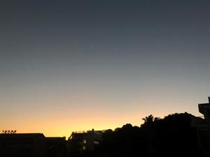
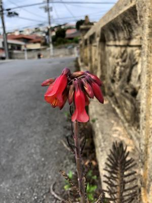

うるがいの話 ある日
最新: 探し物は【うるがいの話 ある日】とは 一日だけのプログです
『うるがいの話』の最新一日だけのプログで、通信料が少なく経済的だ。カニの画像をクリックすると全ての日付が載る『うるがいの話』サイトを表示します
|
|
【うるがいの話】 うるがい(ｳﾙｶﾞｲ urugai)とは、『もずくがに』の名前でとても大きくなります。 |
|---|---|
|
|
【カミマヤーの話】 猫のことを方言でマヤーといいます。カミマヤー（kamimayaa）とは、神の猫のことです。 |
|
【タナガーの話】 たながー（ﾀﾅｶﾞｰtanagaa）とは手長えびのことで、何種類かあり大きいのは車 エビぐらいになります。 |

|
【ぶながぁの話】 ぶながー(bunagaa)とは、赤い髪の毛、赤い身体、そして身長は１ｍ２０ｃｍ ぐらい、川の蟹を食べているの目撃された。場所は沖縄県国頭郡大宜味村のと ある村僕の隣近所に住んでいる爺さんから、聞いた話です。 |
|
|
【ギーマの話】 ギーマ(giima)とは、山原の里山に咲くスズランに似た、 花を付けます。実は食べられます、 気が付くと口の周りが紫になっています。 |
2022年01月28日 (金）探し物は
15:51
 
『探しものは何ですか 見つけにくいものですか』⇒車の鍵です 『カバンの
中もつくえの中も 探したけれど見つからないのに まだまだ探す気ですか』
やばい、ヤバイ！。動画編集研修の予習をすべく図書館へ予約してあった本を
取りに市立図書館へ行く。予約していた本を受け取り、駐車場へ戻り車の鍵を
・・、ん！鍵が無い、ポケットを捜すがない。駐車場から図書館の受け付けま
での距離、３０メートル、そこを２回往復し鍵が落ちていないか確認する。一
人しかいない受付に『車の鍵を無くしたようですが、無かったですか？』、い
いえと回答、また駐車場へ戻り受付まで往復する。もう一度、受付に『おかし
い、鍵がないです！』と困って話すと、アリマスよ！と受付の人が言う。『え
何処に』、そこですと私の胸のあたりを指す、私は胸のポケット当たりを見る
が『え、どこですか』と聞きなおす。左の脇に挟んでいますよと。お、あった
はずかしい、スミマセンでした。受付のオジサンは遠慮なく笑う（それはそう
だろう）。室内に入る前に、アルコール消毒すべく手をかざそうとするが、返
本で手が塞がっているため、とっさに本を持っている左の脇に鍵を挟んで右手
だけでアルコール消毒した。そのまま、脇に挟んだまま、窓口で本を返し、予
約した本を受け取り、風呂敷に包みそれを左手に持ち右手だけでアルコール消
毒をし、駐車場に戻る。そして、受付まで戻り・・・、凄いその間ズート脇に
挟んだまま。信じられない今でも。
１５時４９分 ビットコインの総資産 ￥１２、４１５↑